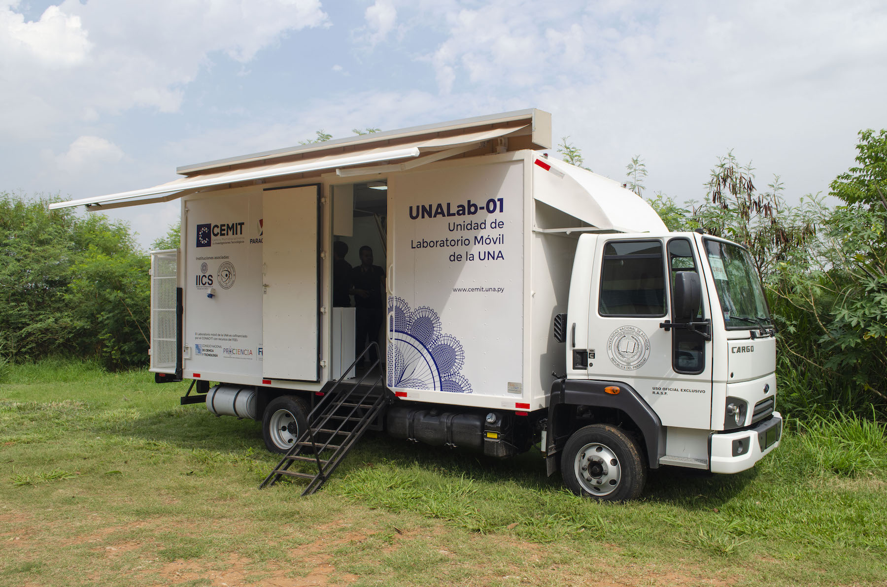

Laboratorio de Ciencia Móvil para Escuelas Rurales
Talleres científicos itinerantes para escuelas sin laboratorio, acercando la experimentación a estudiantes de comunidades rurales.
Recaudado: $38,500
Meta: $50,000